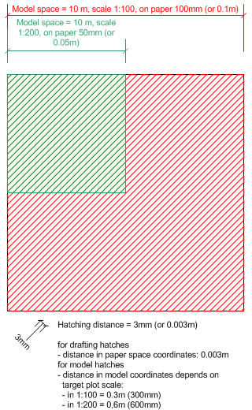

CV-2x3-113 (aka CV-06-113)
Support for annotation pattern for hatching is restricted to model hatches
Based on IFC2x3
Initiator ISG Meeting-Berlin
Effects Extended Coordination View
Date 2006 02 24
Description:
Background:
There are two principal ways to support hatching annotation:
* drafting hatches, also called scale independent - e.g. the distance between two hatch lines is always the same, when plotted on paper, independently of the plot scale.
* model hatches, also called scale dependent - e.g. the distance between two hatch lines is always the same in model space and the distance of hatch lines on paper depends on the plotting scale.
Note: This distinction applies also to curve style patterns and to text block dimensions.
Model hatches (as selected for IFC2x3 extended coordination view) would require to carry an additional target plot scale to allow an receiving application to convert it into drafting hatches. The exchange would require:
* given that the length unit is meter and plane angle unit is degree
* export IfcGeometricRepresentationSubContext with the attribute TargetScale = 0.01 (ratio measure for 1:100)
* associate the hatching object, IfcAnnotationFillArea, with the IfcGeometricRepresentationSubContext
* assign an IfcStyledItem to the IfcAnnotationFillArea
* create an IfcFillAreaStyleHatching and assign it with IfcStyledItem via IfcPresentationStyleAssignment
* set HatchLineAngle to 45' and StartOfNextHatchLine to IfcPositiveLenghtMeasure(0.3)
[modified 05-May-06]
The agreement, based on current the IFC specification and the IFC2x3 extended coordination view, is:
* for IFC2x3 coordination view, only model hatches are supported. The length measures used to describe the fonts (curve style font patterns for the hatching lines, and distances between hatch lines) are given in model coordinates (1:1 in model).
* if the importing system supports model hatches, it can be imported as such
* if the importing system does not support model hatches, but drafting hatches, it need to convert the model hatches into drafting hatches by applying the TargetScale value.
Figure:

Figure 1: Example of a drafting hatch as it behaves on paper